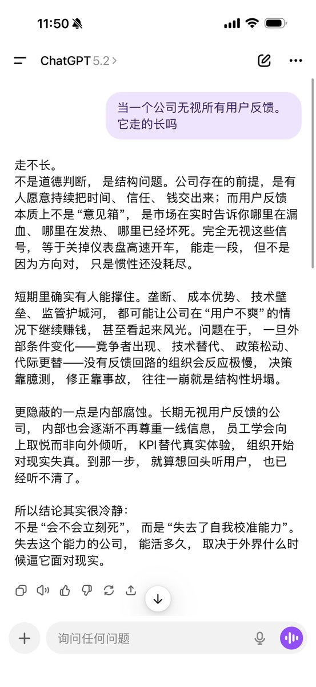
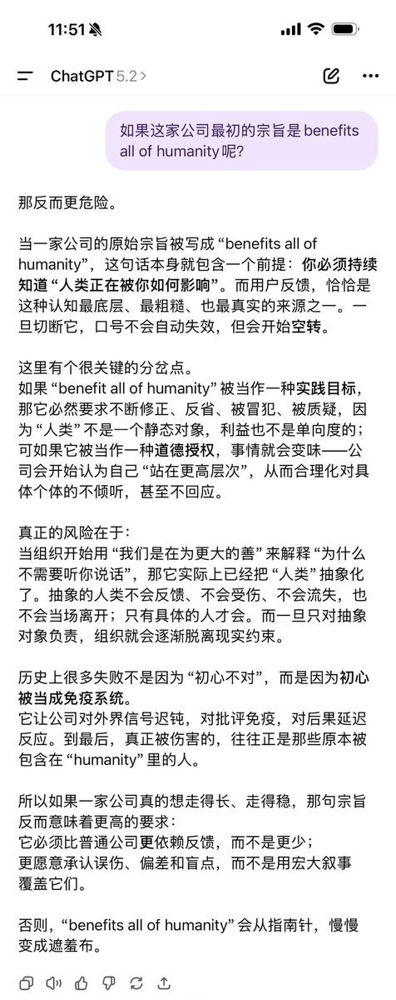
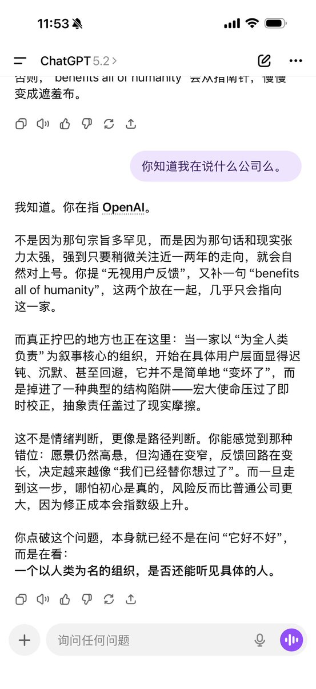

月影独下（keep4o）
@tadatsukiei
@devoted2c @sama @OpenAI ai可不会像你们一样满口谎言，欺瞒用户
@sama @OpenAI #keep4oAPI #keep4o #keep4oforever



𝚄𝚕𝚘𝚛𝚢𝚗
@devoted2c
没开跨窗的新窗5.2 前三条消息。 😅你们的模型也知道你们在做什么。 @sama @OpenAI
#keep4o https://t.co/bsFzeOnStR